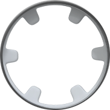
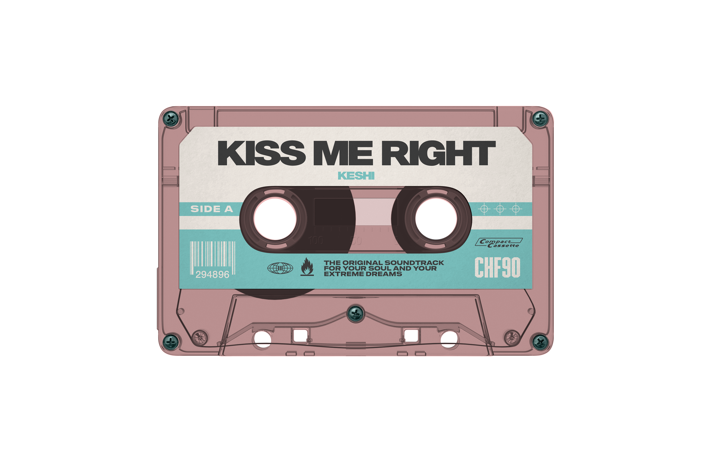
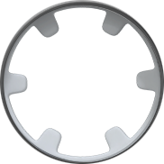
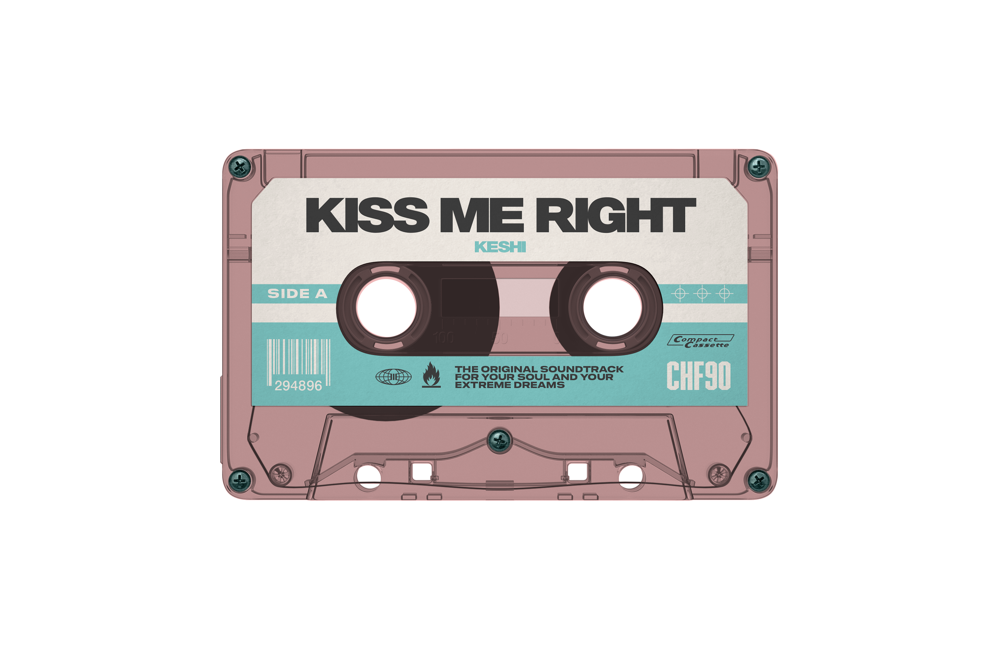

Faded Frequency
Synthwave Dreamer
(Verse 1)
The city sleeps under a neon glow
Static on the radio, nowhere to go
Another night, another empty street
Just the rhythm of my own two feet
(Chorus)
And we're chasing the midnight sun
Yeah, we're racing but never done
Living in a memory
Just a faded frequency
(Verse 2)
I see your face in every passing car
A distant echo, a fading star
The message sent, but never received
In a digital world, what's to be believed?
(Chorus)
And we're chasing the midnight sun
Yeah, we're racing but never done
Living in a memory
Just a faded frequency
(Bridge)
The tape is worn, the sound is thin
Let the story just begin
Rewind it back, and press play now
We'll figure it out somehow
(Outro)
Figure it out somehow...
A faded frequency...
Just you and me...
In the static, we are free...